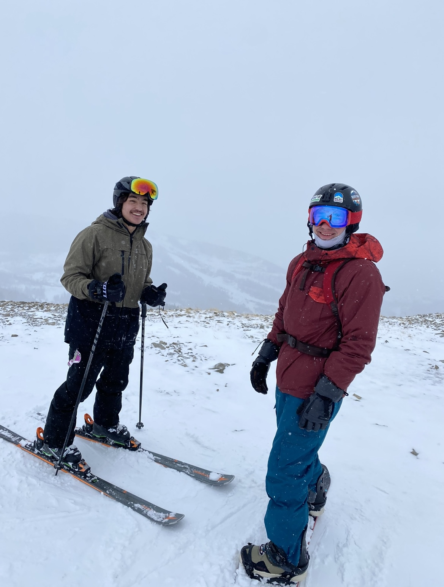
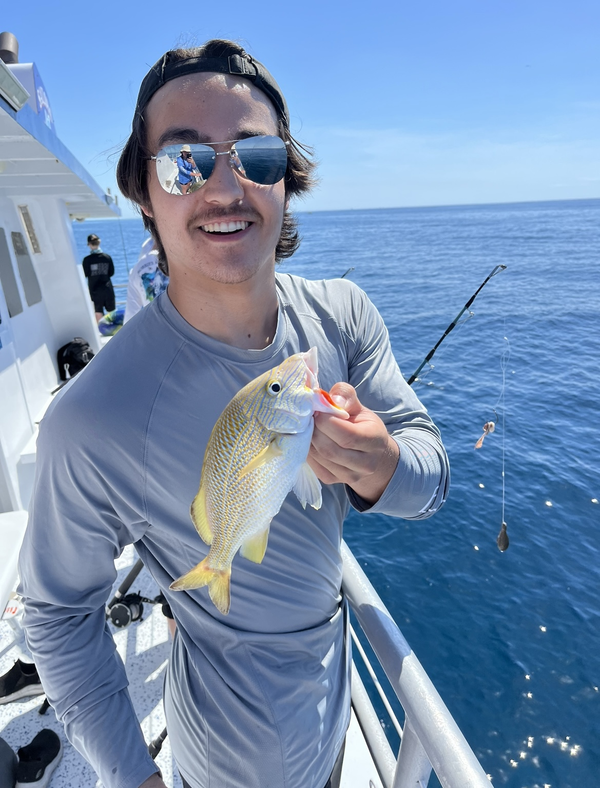
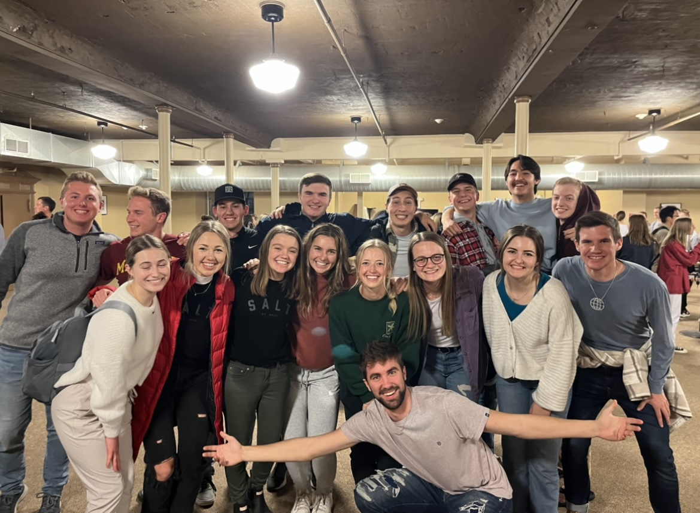

Fun Stuff!
One of my favorite things to do is downhill ski. The photo on the left is me and my friend Joe (who is actually in this class) at Big Sky in Montana. I had the opportunity to go there with him and his dad last January and it was an absolute blast! I've been skiing since I was in 7th grade now, and have gotten to go on a few trips to the mountains. Wild Mountain in Taylors Falls is where I usually go when in Minnesota. Skiing is one of the reasons I have been able to bear the Minnesota winters!
Another one of my favorite hobbies is going fishing. I do not get the chance to go out often and do not have a boat, but it is still a favorite of mine. Last summer, I got to go ocean fishing for the first time in the Florida Keys. It was one of the best experiences of my life! There was such a wide variety of fish that we got to see and catch. It was a very refreshing and unique experience in comparison to fishing in Minnesota. However, when in Minnesota, ice fishing is another thing I have grown to enjoy. I usually like to go with a couple friends to a lake near my hometown and set up spot where we have caught lots of panfish. Going out on a nice summer day is great too, I love being out in nature. It's a good way to get out of the real world for a little bit and have a good time with friends. Even if I don't catch anything, I always have fun doing it.
One final fun thing about me is that I have the opportunity to serve on Salt St. Paul's leadership team. Salt St. Paul (also known as just "Salt" or "The Salt Company") is a Christian ministry that is active here in St. Paul. Their main goal focuses on reaching college campuses in the St. Paul area, with St. Thomas being a large portion of that. As faith and God have always been important parts of my life, it has been a true blessing to be able to get involved with their ministry. I have made so many friends and have found great community there. Leadership, while challenging at times, has pushed me as a person and is therefore bettering me in many ways. I am so thankful for Salt and what God has done through that, and I am looking forward to what the future holds for their ministry!